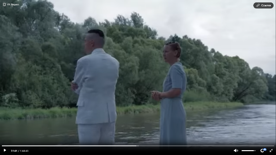
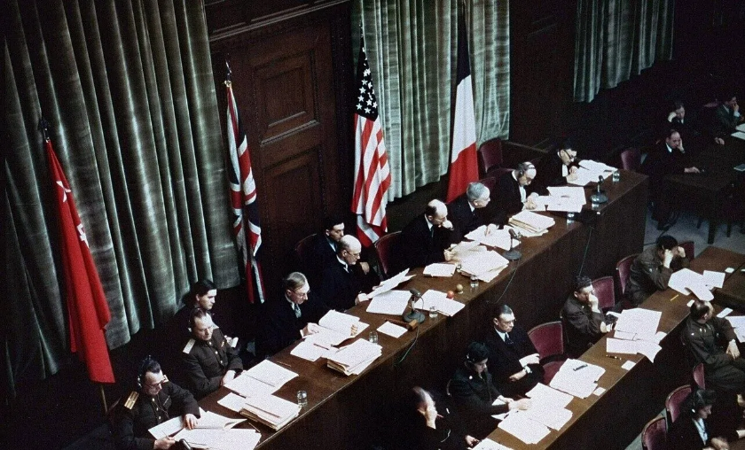

Un juicio, cuatro idiomas”.1 Así se llamó la exposición que este 2025 rindió homenaje a los intérpretes de Núremberg. “Los intérpretes y traductores fueron los héroes tácitos de los juicios de Nuremberg”, escribió Kimberly Guise, subdirectora de servicios de curaduría en el Museo de la Segunda Guerra Mundial en los Estados Unidos de América.2 La Facultad de Derecho de la Universidad de Buenos Aires fue la sede de esta muestra que ya recorrió 30 países y que por primera vez llegó a Hispanoamérica. ¿El objetivo principal? Destacar el papel clave de los intérpretes en la historia de la justicia y la comunicación multilingüe.
Pensar en los juicios de Núremberg desde la labor de los intérpretes es, en definitiva, pensar cómo el derecho, el lenguaje y la memoria dialogan frente al horror. Desde otra estética discursiva, pero atravesado por cuestiones similares, el cine siempre revisita acontecimientos histórico-jurídicos. En este artículo voy a realizar un somero análisis sobre una película que este año tuve que mirar como parte de un trabajo práctico de la materia Derecho Internacional Público (DIP), que forma parte del Ciclo Profesional Común de la carrera de Abogacía que curso en la Universidad de Buenos Aires. A ochenta años de los Juicios de Núremberg, “La zona de interés”3 se me ha presentado (¿casual o causalmente?) como una oportunidad para entender el legado de Núremberg desde una perspectiva más íntima, más inquietante y más perturbadora.
El horror detrás de la pared
La zona de interés, dirigida por Jonathan Glazer y basada libremente en la novela homónima de Martin Amis, propone una representación singular sobre el Holocausto: mostrar Auschwitz sin mostrar Auschwitz. La vida doméstica del comandante Rudolf Höss y su familia (flores, cumpleaños, meriendas infantiles, cuidado del jardín, juegos al aire libre…) convive, fuera de cuadro, con el sonido de las máquinas de exterminio. Esta película exhibe sin exhibir y expone la banalidad del mal de manera brutal: el horror puede coexistir con lo cotidiano sin que tiemble una taza sobre la mesa. Con esa elección estética, la película dialoga con la historia del genocidio, término que amerita un análisis más profundo (que abordaré más abajo). Lo que la cámara calla es lo mismo que durante años el derecho fue incapaz de nombrar.
Como mencioné al comienzo de este artículo, La zona de interés formó parte de un trabajo práctico. Lo que formalmente se impuso como un requisito de regularidad dentro de una materia del plan de estudios de mi carrera terminó desbordando el marco estrictamente académico. La experiencia de mirar la película se convirtió en un punto de inflexión intelectual: no solo por lo que la película muestra, sino, sobre todo, por lo que nos obliga (más que invita) a pensar. Lejos de limitarse al cumplimiento de una simple consigna, el ejercicio abrió un espacio de reflexión crítica sobre la responsabilidad internacional, la normalización de la violencia, los límites del derecho frente a lo indecible y el desprecio por la raza humana.
Una de las preguntas del trabajo práctico —que se añadía a aquellas vinculadas a ejes jurídicos e históricos— fue: ¿Qué emociones le generó la película y en relación con cuál escena? No me fue muy difícil responder la pregunta. En general, el contraste entre la comodidad del hogar de los Höss y el sufrimiento que se percibe de manera lejana me provocó una sensación de incomodidad constante e impotencia. La sonoridad de la película colabora con estas emociones: la película es una prueba irrefutable de que no siempre se necesitan imágenes explícitas (a excepción de algunas escenas como las vitrinas de vidrio, donde se observan los zapatos y otros objetos personales de las víctimas, que simbolizan el horror real): bastan los sonidos (los gritos, los disparos, los hornos que no se ven) para comunicar y denunciar la crueldad y la atrocidad. La zona de interés me hizo reflexionar sobre la indiferencia, la falta de empatía y sobre cómo las personas pueden acostumbrarse al mal en aras de preservar su bienestar económico y estatus social. Si bien estos comportamientos se inscriben en un contexto histórico extremo, resulta legítimo preguntarse: ¿Acaso estas actitudes no persisten, bajo otras formas y modalidades, en ámbitos sociales, políticos, académicos y laborales contemporáneos?
Con relación a la escena que me generó emociones particulares, paso a situar el contexto. Sentados en reposeras, al sol y en el jardín, Rudolf Höss le comunica a su esposa, Hedwig, que será relevado de su cargo como comandante de Auschwitz y transferido a Oranienburg para asumir funciones como subinspector de los campos de concentración. Luego de esa noticia, la Sra. Höss, furiosa, sale a buscar a su marido, quien se había alejado de la casa ante el disgusto y descontento de su esposa. La escena específica a la que me refiero comienza en el minuto 00:50:01 (véase foto más abajo). Rudolf Höss está parado sobre el muelle y llega su esposa. Parecen tranquilos, pero la tensión interna traspasa la pantalla. Ella reacciona con un egoísmo absoluto, negándose a dejar la casa “perfecta” con jardín y pileta, la “buena vida”, como si fuera su propio paraíso. Lo estremecedor es que ese “paraíso” está literalmente a metros del infierno, el campo de Auschwitz.

En el fondo, ese diálogo sereno revela la dimensión moral del horror: ella se aferra al confort, al jardín, a su hogar, mientras elige ignorar por completo lo que ocurre “del otro lado del muro”. Lo que me conmovió a mí no fue el llanto de ella, sino la ausencia total de empatía. Esa indiferencia, filmada con una estética limpia, fría y distante, refleja hasta qué punto la normalidad puede convivir con el mal.
El eco del pasado en un presente que cruje
Los juicios de Núremberg fueron una iniciativa de los países vencedores de la Segunda Guerra Mundial (Estados Unidos, Gran Bretaña, Francia y la Unión Soviética).4 El objetivo era juzgar a dirigentes y colaboradores de la Alemania nazi para que los crímenes de guerra y el Holocausto no quedaran impunes. El 20 de noviembre de 1945 se abrió, en la Sala 600 del Palacio de Justicia de Núremberg, el primer proceso penal internacional de la historia moderna contra los principales jerarcas nazis.

Núremberg inauguró un principio que atraviesa el derecho internacional hasta hoy: los individuos, y no solo los Estados, pueden responder penalmente por las atrocidades cometidas bajo su autoridad. Esto significó un verdadero avance para la comunidad internacional, pues históricamente solo el Estado era considerado sujeto de derecho internacional pasible de sanciones penales. Aunque acotada a una tríada de crímenes internacionales (crímenes de guerra, crímenes contra la humanidad y crímenes contra la paz), por primera vez se reconocía la responsabilidad penal del individuo en el ámbito internacional.
El legado de Núremberg es innegable: sentó las bases del Derecho Penal Internacional, formuló los Principios de Núremberg,5 rechazó la “obediencia debida” y consagró la idea de que ningún Estado puede servir de escudo para cometer crímenes de guerra, crímenes de lesa humanidad o crímenes contra la paz. Sin embargo, el presente parece discutir y poner en duda esos consensos con creciente facilidad. El aumento de la impunidad a nivel mundial, la resistencia al Estatuto de Roma, las críticas a la Corte Penal Internacional y la capacidad de ciertos líderes para eludir responsabilidad internacional revelan no solo la fragilidad del andamiaje jurídico nacido en 1945, sino también el peso de intereses políticos, estratégicos y económicos que, en la práctica, subordinan el derecho internacional a las lógicas de poder.
Genocidio: el término que no existía
Winston Churchill lo llamó en 1944 “el crimen sin nombre”. Cabe recordar que, al momento de celebrarse los Juicios de Núremberg (1945–1946), la categoría jurídica genocidio aún no había sido incorporada al derecho internacional positivo. Es por ello que durante los Juicios de Núremberg no se pudo tipificar el genocidio como figura autónoma. Aun así, el proceso fue decisivo: los actos criminales juzgados en Núremberg fueron encuadrados bajo las categorías de crímenes de guerra, crímenes contra la humanidad y crímenes contra la paz, lo que no impide reconocer, desde una perspectiva contemporánea, que muchos de los hechos allí juzgados serían hoy subsumibles en la figura de genocidio.
Si bien la noción había sido propuesta por Raphael Lemkin6 en 1944 para describir la destrucción sistemática de grupos nacionales, étnicos, raciales o religiosos, su consagración jurídica se produjo recién en 1948. El derecho positivo, antes de la recepción expresa en la norma convencional, solo contemplaba actos como asesinatos, masacres, exterminios, pero ninguna palabra expresaba la aniquilación de una comunidad como tal.
En diciembre de 1946, tras la conclusión de los juicios, la Asamblea General de la recién creada ONU declaró el genocidio como un delito dentro del derecho internacional. Dos años más tarde, adoptó la Convención para la Prevención y la Sanción del Delito de Genocidio, 7 un acuerdo de 1948 que calificaba de “azote odioso” el intento de destruir total o parcialmente a un grupo nacional, étnico, racial o religioso. Desde entonces, el genocidio está prohibido por la comunidad internacional, configurándose esa prohibición en una norma ius cogens.8
Raphael Lemkin creó el neologismo genocide [genocidio] combinando la voz griega genos [γένος] (pueblo, raza) y el sufijo latino -cide (matar). Lemkin, que había perdido a casi toda su familia en los campos de concentración, sostenía que sin un nombre no había una norma, y sin norma no había responsabilidad. Lo innombrable no podía ser juzgado. Lo jurídico necesitaba el lenguaje tanto como el lenguaje necesitaba el testimonio histórico.
La Convención del Genocidio (1948)
Como ya mencioné, la tipificación autónoma del genocidio en el derecho internacional se consolida en 1948 con la adopción de la Convención para la Prevención y la Sanción del Delito de Genocidio,9 aprobada por la Asamblea General de las Naciones Unidas. Este instrumento surge tres años después de los Juicios de Núremberg con el objetivo de llenar un vacío normativo existente en el derecho penal internacional de la época, mediante la creación de un tipo penal específico y autónomo que permitiera captar la particular gravedad de la destrucción sistemática de determinados grupos humanos.
La Convención define genocidio como cualquiera de los actos enumerados en el Artículo II, perpetrados con la intención de destruir, total o parcialmente, a un grupo nacional, étnico, racial o religioso. Se establece así un criterio de tutela colectiva que distingue a esta figura de otros crímenes internacionales. La exclusión de los grupos políticos del ámbito de protección fue una decisión deliberada y ampliamente discutida en los debates preparatorios, que respondió a consideraciones políticas del contexto de posguerra y ha sido objeto de críticas sostenidas por parte de la doctrina.
Desde el punto de vista dogmático, el tipo penal de genocidio presenta una estructura compleja, compuesta por un elemento subjetivo y un elemento objetivo. En cuanto al primero, el hecho ilícito exige la concurrencia de una intención especial, consistente en la voluntad de destruir total o parcialmente a un grupo protegido como tal, lo que lo diferencia de otras formas de violencia masiva. En cuanto al elemento objetivo, la Convención enumera una serie de conductas típicas, entre las que se incluyen la matanza de miembros del grupo, la causación de lesiones graves a la integridad física o mental de los miembros del grupo, el sometimiento deliberado a condiciones de existencia que hayan de acarrear su destrucción, la adopción de medidas destinadas a impedir nacimientos y el traslado forzoso de niños del grupo a otro grupo.
Cabe agregar, finalmente, que la Convención de 1948 no solo tipificó el genocidio como crimen internacional,10 sino que también proyectó la necesidad de un tribunal penal internacional permanente para su juzgamiento. No obstante, esa aspiración recién se concretaría varias décadas más tarde con la adopción del Estatuto de Roma en 1998 y la creación de la Corte Penal Internacional, lo que pone de relieve el carácter progresivo y aún inacabado del desarrollo del derecho penal internacional.
Reflexiones finales: el DIP y la responsabilidad de la comunidad internacional
Recordar Núremberg no debe circunscribirse a un acto ceremonial. Debe ser un ejercicio de vigilancia ética sin interrupciones. La zona de interés nos recuerda que el horror puede volverse paisaje. Lemkin nos recuerda que sin lenguaje no hay derecho ni condenas totalmente justas. Y Núremberg, aun con sus limitaciones formales, nos recuerda que los crímenes más graves no pueden quedar atrapados ni camuflados en la soberanía estatal ni escondidos detrás de la obediencia jerárquica.
Ochenta años después, la historia vuelve a exigirnos tres cosas: mirar, nombrar y juzgar. Ochenta años después, el aniversario no llega en un clima de celebración. La guerra continúa y las atrocidades humanas también. Curiosamente, termino de escribir este artículo el mismo día en que se difunde una triste noticia: la comunidad judía fue blanco del tiroteo más mortífero en Australia en décadas. Sí, hoy, 14 de diciembre del año 2025. Más de mil personas se encontraban reunidas en Bondi, una de las playas más icónicas del país, celebrando Hanukkah, una festividad central de la tradición judía, cuando el encuentro fue abruptamente interrumpido por un ataque armado. Esa masacre pone de relieve las deudas aún pendientes de la comunidad internacional en materia de prevención, memoria y protección efectiva de los derechos humanos.
En lo personal, considero que el derecho internacional público debe dejar de ser una expresión de deseo con conceptos que parecen irrealizables (paz, fraternidad y seguridad entre naciones). El avance del DIP está impregnado de intereses políticos y consideraciones extrajurídicas. Una de las críticas es su carácter endeble: los estados pueden elegir cumplir con normas que los favorecen e incumplir con normas con las que consideren repugnantes o inconvenientes. Sin embargo, según los internacionalistas, hay un alto grado de respeto por parte de los Estados con relación a los tratados y costumbres de los que forman parte, incluso por los estados más poderosos que podrían incumplir y ampararse en la ausencia de modos de ejecución. Napolitano11 sostiene que la decisión de los Estados de cumplir con las normas del DIP excede lo jurídico. Según la autora, el acatamiento de dichas normas responde, en gran medida, a consideraciones de carácter metajurídico. Entre ellas se destacan factores de política exterior, vinculados a la expectativa de reciprocidad, en la medida en que ciertos Estados optan por limitar voluntariamente su soberanía con el fin de promover conductas similares por parte de otros. Asimismo, intervienen razones de política interna, ya que las autoridades estatales adoptan decisiones teniendo en cuenta sus posibles repercusiones electorales. A ello se suman consideraciones económicas, tales como la necesidad de generar condiciones favorables para la recepción de inversiones extranjeras. Finalmente, la autora identifica factores de índole psicológica y social, relacionados con el peso de la opinión pública y el accionar de la sociedad civil, que han desarrollado mecanismos para visibilizar conductas estatales inapropiadas. En este sentido, la previsibilidad y la seguridad jurídica generan confianza en el plano internacional, mientras que la estigmatización como infractor de las normas del derecho internacional público resulta perjudicial para la posición de un Estado frente a la comunidad internacional.
En la medida en que el DIP se presenta como un verdadero derecho fundado en la voluntad de los Estados soberanos, que no reconocen una autoridad superior capaz de imponerles conductas de manera coercitiva, su eficacia queda estructuralmente condicionada por la persistencia de lógicas de poder que habilitan el incumplimiento sistemático de normas destinadas a la protección de los derechos humanos. La organización del orden internacional, basada en la ficción de la igualdad jurídica entre los Estados y en una estructura predominantemente descentralizada, dificulta la existencia de mecanismos efectivos de subordinación y sanción, propios de los derechos internos. Si bien el DIP enuncia objetivos normativos ambiciosos, como la resolución pacífica de controversias y la construcción de una comunidad fraterna de naciones, la reiteración de violaciones graves a los derechos humanos y la impunidad de los Estados más poderosos ponen en evidencia la distancia persistente entre esos principios declarativos y su concreción en la práctica internacional.
A la luz de todo lo expuesto, resulta inevitable preguntarse si las atrocidades del siglo XX han dejado un legado verdaderamente operativo o si, por el contrario, ese legado se presenta hoy de manera frágil y en constante amenaza. La promesa del derecho internacional público, construida sobre la memoria de los horrores pasados y orientada a evitar su repetición, sigue ofreciendo un horizonte normativo que invita a la adhesión por parte de los sujetos de derecho internacional. Sin embargo, la persistencia de violaciones graves a los derechos humanos, la reiteración de discursos de exclusión y violencia, y los conflictos armados contemporáneos, como la guerra entre Rusia y Ucrania, el conflicto persistente en Medio Oriente y los episodios recientes de violencia extrema contra civiles, como la masacre ocurrida en Bondi (Australia) ponen en tensión esa confianza y obligan a reconocer las profundas limitaciones del orden internacional.
Entre la aspiración a un orden jurídico internacional fundado en la justicia y la paz, y la constatación empírica de su incumplimiento reiterado, el DIP parece oscilar permanentemente entre la esperanza y la desilusión, dejando abierta una pregunta incómoda pero necesaria: ¿Hasta qué punto la comunidad internacional está realmente dispuesta a transformar la memoria del pasado en compromisos jurídicos efectivos en el presente? Ojalá que el futuro inmediato nos ofrezca una respuesta positiva y esperanzadora.
-
https://lafolkargentina.com.ar/a-nota/188265/un-juicio-cuatro-idiomas-la-exposicion-que-rinde-homenaje-a-los-interpretes-de-nuremberg
↩ -
Cómo los juicios de Núremberg revolucionaron y dieron origen a la traducción simultánea como la conocemos hoy. Redacción: BBC News Mundo. https://www.bbc.com/mundo/noticias-58761441
↩ -
La zona de interés (The Zone of Interest) es una película de drama y guerra de 2023, dirigida por Jonathan Glazer y protagonizada por Sandra Hüller y Christian Friedel, que explora la vida idílica de la familia del comandante de Auschwitz, Rudolf Höss, justo al lado del campo de exterminio, mostrando la banalidad del mal a través de la vida cotidiana y los horrores apenas percibidos. Ganadora de dos Premios Óscar (Mejor Película Internacional y Mejor Sonido) y el Gran Premio del Jurado en el Festival de Cannes.
↩ -
Aunque China fue una de las potencias aliadas durante la Segunda Guerra Mundial, no formó parte del Tribunal Militar Internacional de Núremberg ni intervino en esos juicios. China tuvo un rol distinto en el escenario internacional de posguerra (por ejemplo, como miembro permanente del Consejo de Seguridad de la ONU), pero no en Núremberg.
↩ -
https://www.dipublico.org/109514/formulacion-de-los-principios-de-nuremberg/
↩ -
Raphael Lemkin, jurista judío polaco de derecho internacional, es famoso por acuñar el término genocidio. También trabajó para tipificar el genocidio como delito en el derecho internacional. De niño, en la Polonia rural, Lemkin se sintió fascinado por las atrocidades históricas. Fuente: https://blogs.loc.gov/law/2019/05/dr-raphael-lemkin-the-totally-unofficial-man/
↩ -
https://www.ohchr.org/es/instruments-mechanisms/instruments/convention-prevention-and-punishment-crime-genocide.
↩ -
También llamadas norma imperativa de derecho internacional general. Se trata de normas generales que no admiten acuerdo en contrario. Solo pueden ser modificadas en el futuro por otra norma imperativa. Los autores suelen incluir en esta categoría: prohibición del genocidio, de la esclavitud, de la tortura, entre otros.
↩ -
La Convención para la Prevención y la Sanción del Delito de Genocidio de 1948 es el primer tratado de derechos humanos adoptado por la Asamblea General de la ONU. Se adoptó tras el Holocausto ocurrido durante de la Segunda Guerra Mundial, en el que la Alemania nazi asesinó sistemáticamente a más de seis millones de judíos. La Convención para la Prevención y la Sanción del Delito de Genocidio de 1948 es el primer tratado de derechos humanos adoptado por la Asamblea General de la ONU. Se adoptó tras el Holocausto ocurrido durante de la Segunda Guerra Mundial, en el que la Alemania nazi asesinó sistemáticamente a más de seis millones de judíos.
↩ -
En DIP, se hace una distinción entre delitos internacionales y crímenes internacionales. Los primeros violan normas dispositivas —de fuente convencional o consuetudinaria— mientras que los segundos violan normas imperativas del derecho internacional general (ius cogens). La violación de una norma de ius cogens configura un crimen internacional, cuya gravedad trasciende el interés individual de los Estados y activa consecuencias jurídicas agravadas, entre ellas la posibilidad de atribuir responsabilidad penal internacional, especialmente en relación con los crímenes más graves, como el genocidio, los crímenes de guerra y los crímenes de lesa humanidad.
↩ -
González Napolitano, S. S. (Coord.). (2015). Lecciones de derecho internacional público. Editorial Erreius.
↩
Sobre la autora
Mariela Santoro es Traductora Pública en Idioma Inglés por la Universidad de Buenos Aires y Magíster en Traducción de Inglés por la Universidad de Belgrano. Además de desempeñarse como traductora autónoma, desde el año 2009 se desempeña como docente de traducción jurídica en carreras de grado y de posgrado. Es divulgadora de contenido y autora de artículos sobre traducción profesional. En el año 2024, retomó sus estudios de Abogacía en la Facultad de Derecho (UBA). Amante del animal print y de la música, es cantautora y lidera tres proyectos musicales. Comenzó a estudiar inglés a los nueve años porque quería entender qué decían las letras de las canciones que escuchaba. Su primer intento de traducción fue un par de años después: la letra de ‘Desire’, una canción de la banda irlandesa U2, con un diccionario bilingüe de papel y un cuadernito que llevaba a todos lados consigo. Desde entonces, supo que jamás abandonaría la traducción, labor que la apasiona día a día y pasión que intenta transmitirles a sus alumnos en el aula.